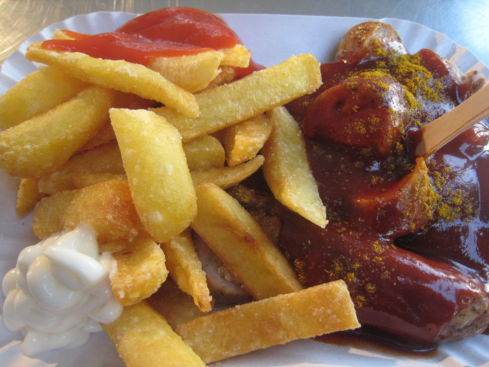
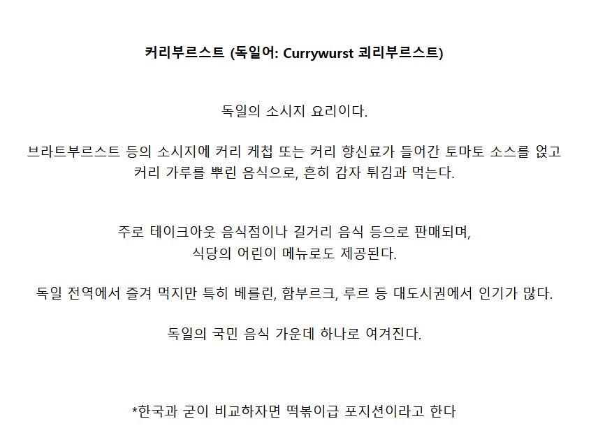
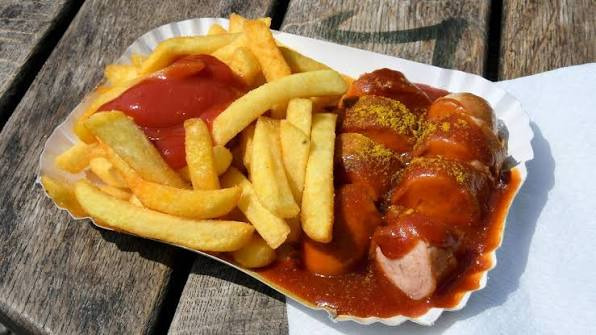
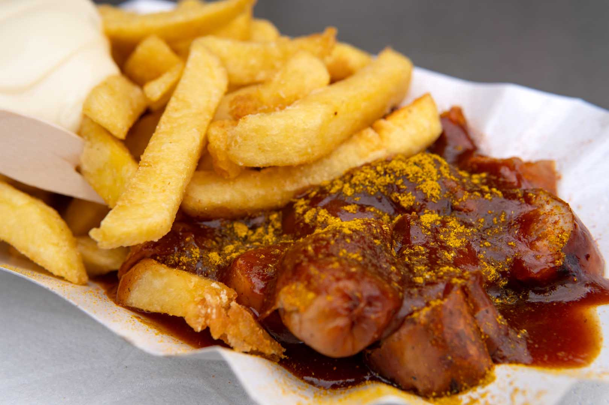
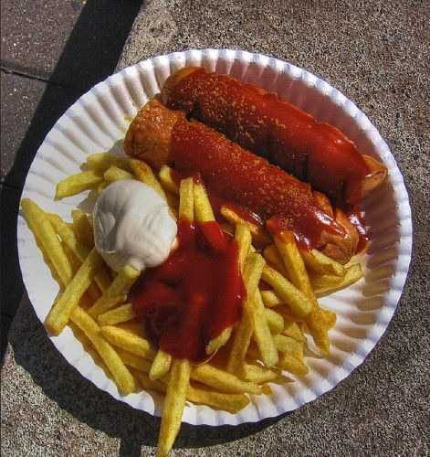
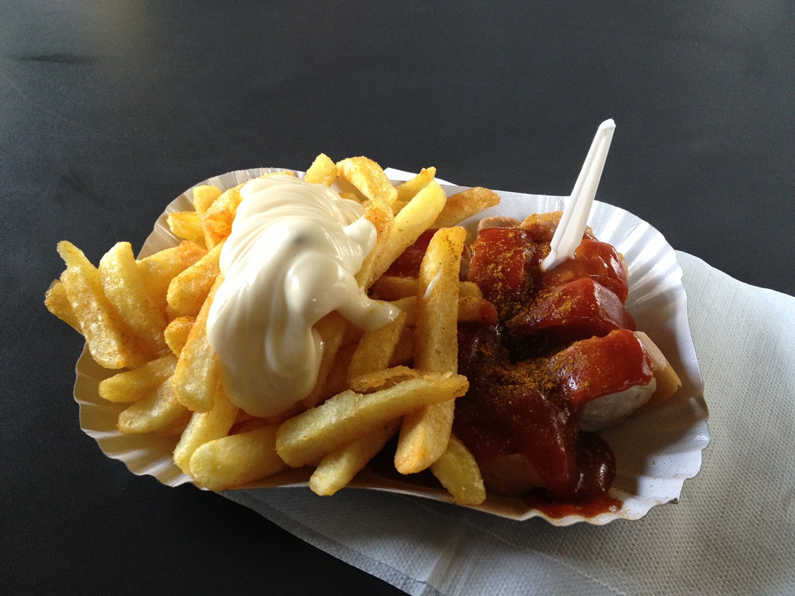
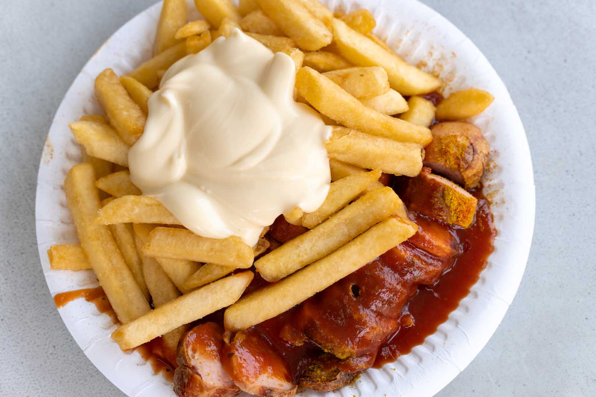

https://cafe.daum.net/subdued20club/ReHf/5753252?svc=cafeapi







https://cafe.daum.net/subdued20club/ReHf/5753252?svc=cafeapi







독일 소세지는 차원이 다르다던데 진짜 일까
진짜임
독일 가봤는데 소시지 탑티어는 인정. 슈니첼에 버섯 크림 소스 환상적. 근데 밥 대신에 쟤네는 감자를 주는데 그게 엄청 물림ㅠ감자를 튀기던 매쉬로 주던 뭔가 좀 맛없어...ㅠ
우리나라에서 양 채우려고 주는 떡 같은 느낌인듯
던x 든o
소금 후추 치고 식초뿌려!
누가봐도 떡볶이
난 떡볶이 먹을래 그냥....
음 좋아 바로 육식맨 독일 소세시 기행 정주행 해주마
맥주 가져와
푸틴, 피쉬앤칩스랑 동급 음식이네
맛있겠네
육식맨이 이거 수입해서 팔았던데 평이 다들 좋더라
오 찾아봐야겠다 어디서 파는지
수입이 아니라 사조랑 같이 콜라보로 제작해서 판거아니가
맛 괜찮아서 커리케찹 만들어봤는데
전혀 안비슷하더라ㅋㅋㅋㅋ
부르릇
지금 냉장고에 별거 든게 없는데 어떻게 딱 그것만 쓴게 개드립에 올라와있네
순무빵과 치커리커피 쇼카콜라가 아니야?
몸에 안좋은것도 비슷하네